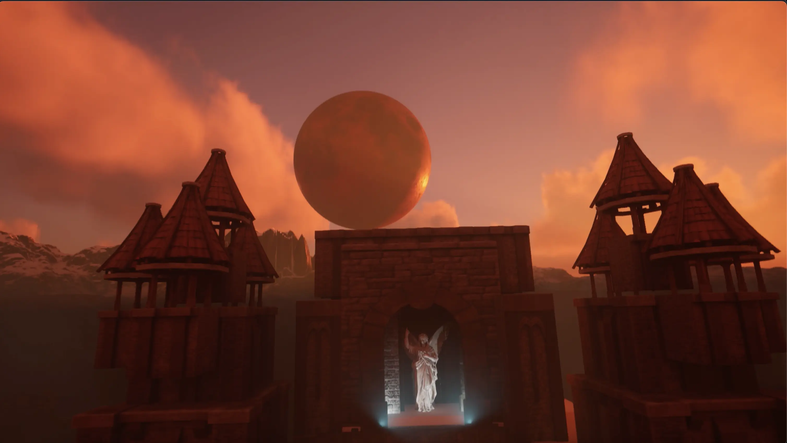
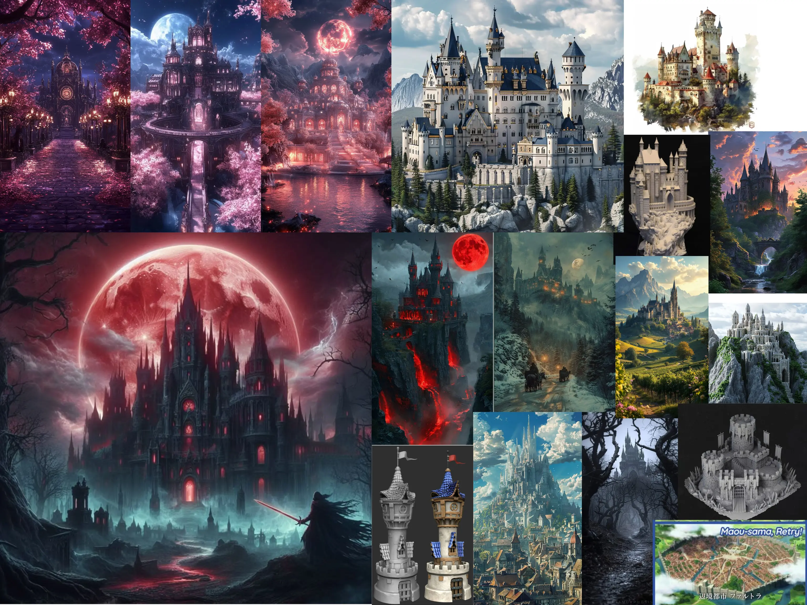

Project type:
Castle Level Design in Unreal Engine.
Project description:
There are two goals with this project: First, to familiarize myself with a common practice in contemporary game design and development: "Kit-bashing." And second, to create a portfolio-worthy 30 second fly-through of a tiny medieval fantasy scene of my own creation
For this project, I was provided with a collection of kitbash-ready components designed for a fantasy medieval castle and village. My objective was to design and assemble a visually compelling landscape featuring a small castle, surrounding village elements, and produce a cinematic, portfolio-worthy flythrough—all presented in a single seamless take.
------------------
I began by analyzing the kitbash asset map to understand the full range of modular pieces available. To establish a strong visual direction, I researched architectural references and fantasy environments on Pinterest. With a clear vision in mind, I created a whitebox layout to block out the spatial composition of the castle and surrounding structures.
------------------
The final flythrough opens at the castle entrance, flanked by two illuminated giant stone lions. A foggy atmosphere partially obscures the background, while a half-moon—partially hidden behind the towering entrance—builds anticipation for the viewer. As the camera slowly moves forward, the massive doors open, revealing a path lined with stone horse statues. I placed a mannequin beside the statues to convey a clear sense of scale.
The pathway leads to a towering structure crowned with a goddess statue, with a full blood moon dramatically rising in the background. The flythrough concludes with a vertical ascent, the fog lifting to reveal the entire castle from a top-down perspective, capturing the full grandeur of the scene.
Date:
March 17 - April 6, 2025
Role:
Level Designer.
Project highlight:
Fly through:
Please choose 1080p for highest quality.
Reference and Concept board:
